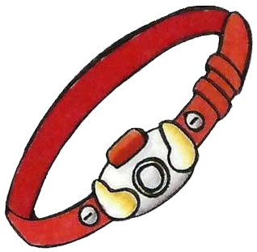
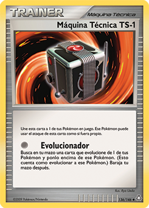
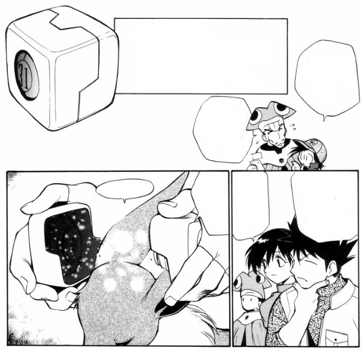
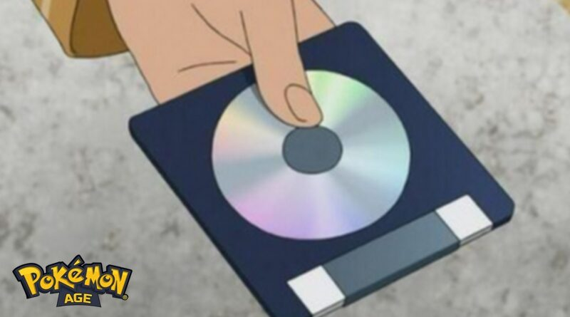
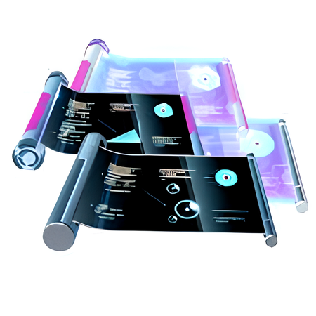

Evolução das TMs no Mundo Pokémon
Uma jornada tecnológica através das gerações
Introdução sobre TMs
No universo Pokémon, as TMs (Technical Machines ou Máquinas Técnicas) representam uma das tecnologias mais fascinantes, permitindo que treinadores ensinem movimentos especiais aos seus Pokémon. Desde a primeira geração, essas ferramentas evoluíram significativamente em design e funcionalidade.
As TMs funcionam como dispositivos de armazenamento de conhecimento que transferem instantaneamente a técnica para o Pokémon. Ao contrário dos movimentos aprendidos naturalmente, as técnicas ensinadas por TMs podem ser esquecidas e reaprendidas, oferecendo flexibilidade estratégica nas batalhas.
A Evolução do Design das TMs
A aparência das TMs mudou dramaticamente ao longo dos anos, refletindo tanto a evolução tecnológica do mundo Pokémon quanto a criatividade dos desenvolvedores. Confira esta linha do tempo visual:
Pokémon Red e Green (1996)
As primeiras TMs eram representadas como faixas tecnológicas que se acoplavam ao corpo do Pokémon, sugerindo um método físico de transferência de conhecimento.
TCG Clássico
No Trading Card Game, as TMs apareciam como pequenos dispositivos em formato de caixa que podiam receber uma Pokébola em seu interior, indicando sua compatibilidade com qualquer Pokémon.
The Electric Tale of Pikachu (Mangá)
No mangá, as TMs eram retratadas como dispositivos futuristas que se dividiam em duas partes e envolviam a cabeça do Pokémon, sugerindo um processo de "download" mental das técnicas.
FireRed e LeafGreen (2004)
A partir desta geração, as TMs adotaram o formato de discos compactos, um padrão que se manteria por várias gerações seguintes e seria adotado também em Pokémon Mystery Dungeon.
Pokémon Origins (2013)
Na série animada Pokémon Origins, as TMs foram representadas como disquetes de computador, talvez uma referência nostálgica à tecnologia dos anos 90 quando a franquia começou.
Pokémon GO (2016)
No jogo mobile, as TMs assumiram um formato totalmente digital, aparecendo como documentos que se enrolam automaticamente dentro de tubos, refletindo a natureza moderna do jogo.
Essa evolução de design não apenas reflete mudanças tecnológicas no mundo Pokémon, mas também mostra como os desenvolvedores reinterpretaram continuamente esse conceito fundamental da franquia.
TMs Através das Gerações
Algumas técnicas se tornaram praticamente universais, aparecendo como TMs em quase todas as gerações. Esta tabela mostra a presença desses movimentos essenciais:
| Golpe | I | II | III | IV | V | VI | VII | VIII USUM |
VIII LGPE |
VIII BDSP |
IX |
|---|---|---|---|---|---|---|---|---|---|---|---|
| Tóxico | 06 | 06 | 06 | 06 | 06 | 06 | 06 | 06 | – | – | – |
| Proteger | – | 17 | 17 | 17 | 17 | 17 | 17 | 17 | – | 007 | – |
| Descansar | 44 | 44 | 44 | 44 | 44 | 44 | 44 | 44 | – | 085 | – |
| Fachada | – | – | 42 | 42 | 42 | 42 | 42 | 42 | – | 42 | 025 |
| Substituir | – | – | 90 | 90 | 90 | 90 | 90 | 90 | – | 103 | – |
| Tera Blast | – | – | – | – | – | – | – | – | – | – | 171 |
Observação: Os números indicam a posição da TM em cada geração. Um traço (–) significa que o movimento não estava disponível como TM naquela geração específica.
A Importância Estratégica das TMs
Além de seu valor histórico e tecnológico, as TMs sempre foram elementos cruciais na estratégia competitiva Pokémon:
- Customização de Movimentos: Permitem criar combinações únicas não disponíveis no aprendizado natural
- Flexibilidade Tática: Movimentos podem ser reaprendidos conforme a necessidade
- Acesso a Técnicas Poderosas: Muitos dos melhores movimentos só estão disponíveis via TM
- Meta Jogo Dinâmico: A cada geração, a lista de TMs disponíveis altera o cenário competitivo